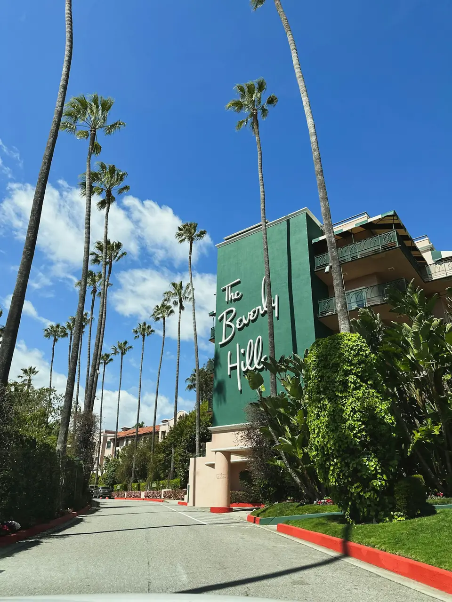

California Shopping: Rodeo Drive, The Grove & Walkable Districts
· By GoldenPath Guide Editorial Team
California is a state built on style, and its shopping reflects that as much as its climate. From glamorous luxury boulevards to breezy outdoor malls, historic department stores and eclectic independent districts, the Golden State offers some of the most varied retail experiences in the country. The best of it is walkable, sunny and beguilingly easy to wander for an afternoon — and here is how to plan a visit. On a warm afternoon the light bounces off a hundred glass facades, and the pavement gives back a steady warmth underfoot that makes the whole errand feel strangely unhurried.
Los Angeles: Luxury & Street Style
Los Angeles pairs high-end glamour with a laid-back street culture. Rodeo Drive in Beverly Hills is the global icon of luxury retail — a glittering stretch of window displays, boutiques and people-watching under the palm trees, where the fronds rattle gently overhead and the only hurry is in the traffic. For something buzziers and more accessible, The Grove is a beloved open-air shopping center with a Farm Market next door and a charming, village-like atmosphere. Over on Melrose Avenue, independent shops, vintage stores and murals capture the city’s creative edge.
- Rodeo Drive — high-end fashion and designer flagships.
- The Grove — pedestrian-friendly outdoor mall with a trolley and dining.
- Melrose Avenue — street style, vintage and indie boutiques.
- Santa Monica’s 3rd Street Promenade — a car-free shopping street near the beach.
San Francisco & South Coast
In San Francisco, Union Square is the historic heart of city shopping — a plaza ringed by department stores, flagship shops and theaters, with the cable cars trundling by. For a more local feel, Fillmore Street offers boutique, independent retail in one of the city’s graceful neighborhoods. South of LA, South Coast Plaza in Costa Mesa is one of the highest-grossing luxury shopping centers in the world, packed with designer labels.
El Paseo & Napa Valley Boutiques
To the east, Palm Springs’ El Paseo brings desert elegance — an upscale, tree-lined stretch of galleries and boutiques nicknamed the “Rodeo Drive of the desert,” all under brilliant sunshine. Up in wine country, Napa Valley leans into a different kind of shopping: small tasting-room boutiques, and at Oxbow Public Market, a lively artisan food hall of local producers, cheese, seafood and wine.
Where to Start
If you only have one city, Los Angeles delivers the most variety — luxury, outdoor malls and indie streets all within an hour of each other. San Francisco is better for a stroll-and-browse day around Union Square and the neighborhoods, while Palm Springs and Napa offer a slower, more scenic pace with wine, art and boutiques along the way. Pair any shopping day with lunch or a café stop to break it up, and remember that California’s sunshine makes outdoor districts a pleasure nearly all year — a warmth that lingers well past the moment the bags are stowed and the boulevard closes behind you.
Practical Tips
A little know-how keeps the experience smooth.
- Sales tax. California sales tax varies by city and county and changes over time — budget accordingly.
- Outlet malls. For discounted designer goods, outlet centers in Camarillo and Vacaville are popular pit stops.
- Plan your day. Most districts are best explored midday; parking can be pricey, so consider transit or a central garaged lot.
Sales Tax & Outlet Math
Budget an extra layer at the register. California's statewide base rate sits at 7.25%, and city-plus-district add-ons push the total past 9% in Los Angeles and past 8.5% in San Francisco, so a $100 item often rings up $8–$10 above the tag. Discount hunters head to the big outlet centers at Camarillo north of LA and Vacaville between San Francisco and Sacramento, where brand stores cut 25–65% off retail. Clearance peaks twice a year: January, when holiday stock clears, and July, when summer lines drop. November brings Black Friday doorbusters alongside the year's heaviest crowds. Keep receipts, since 14-day price adjustments are common at department stores.
Parking, Hours & District Hopping
Most outdoor districts open 10am–9pm daily, while luxury flagships on Rodeo Drive close earlier, around 6pm. Parking shapes the day: The Grove validates with purchases, Santa Monica's downtown structures grant a free window (often the first 90 minutes) before hourly rates kick in, and Union Square garages charge $30–$40 for a full day. Rodeo Drive street meters cap at 2 hours and enforce strictly, so the public garages work better for a long browse. Between LA districts allow 20–40 minutes of drive time; rideshares beat re-parking three times. Weekday mornings bring the thinnest crowds and the easiest garage spots.